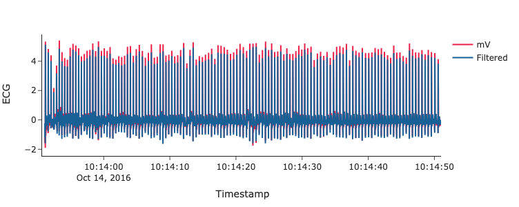
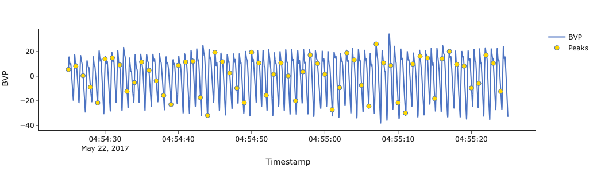
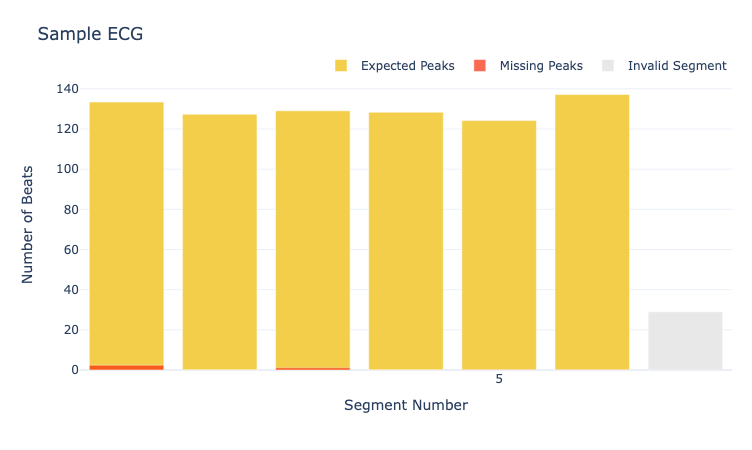
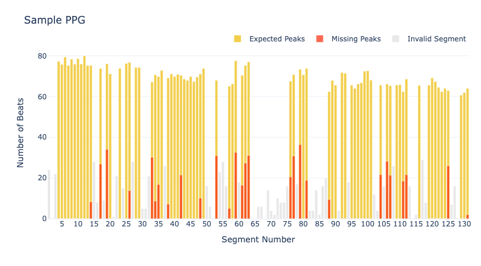

Examples¶
Below are examples of how you can use functions from the HeartView pipeline on your data. Alternatively, see our Jupyter notebooks for full a full walk-through for each type of data.
Reading and Pre-Processing Data¶
Extract and pre-process data from an Actiwave Cardio device.
from heartview.pipeline import ECG
edf = 'sample_actiwave_data.edf'
ecg, acc = ECG.read_actiwave(edf)
display(ecg.head(), acc.head())
Output:
Timestamp mV
0 2016-10-14 10:10:51.000000 -0.206620
1 2016-10-14 10:10:51.000977 -0.197554
2 2016-10-14 10:10:51.001953 -0.186148
3 2016-10-14 10:10:51.002930 -0.197847
4 2016-10-14 10:10:51.003906 -0.190243
Extract and pre-process data from an Empatica E4 device. All pre-processed data are stored in a Python dictionary.
from heartview.pipeline import PPG
e4_zip = 'sample_e4_data.zip'
e4_data = PPG.preprocess_e4(e4_zip)
e4_data.keys()
Output:
dict_keys(['bvp', 'hr', 'ibi', 'acc', 'fs', 'start time'])
Beat Detection¶
Detect R peaks from ECG data collected with the Actiwave Cardio and other sources. Note that ECG data from other sources will have to be read into a Pandas data frame prior to this step.
from heartview.pipeline import ECG
# `ecg` = ECG DataFrame output from `ECG.read_actiwave()`
# `'mV'` = name of column containing ECG values
ecg_fs = 1024
peak_loc = ECG.detect_rpeaks(ecg, 'mV', fs)
# Save R peak occurrences
ecg.loc[peak_loc, 'Peak'] = 1
data.head()
# Count the number of peaks detected
data['Peak'].sum()
Output:
Segment Timestamp mV Powerline Filtered Peak
0 1 2016-10-14 10:10:51.000000 -0.206620 -0.205123 -0.052997 NaN
1 1 2016-10-14 10:10:51.000977 -0.197554 -0.196108 -0.048060 NaN
2 1 2016-10-14 10:10:51.001953 -0.186148 -0.184952 -0.043212 NaN
3 1 2016-10-14 10:10:51.002930 -0.197847 -0.197073 -0.038543 NaN
4 1 2016-10-14 10:10:51.003906 -0.190243 -0.190011 -0.034127 NaN
807.0
Extract heartbeats from interbeat interval (IBI) data from the Empatica E4.
from heartview.pipeline import PPG
# `e4_data` = output from `PPG.preprocess_e4()`
ibi = e4_data['ibi']
e4_fs = e4_data['fs']
start_time = e4_data['start time']
e4_peaks = PPG.get_e4_peaks(ibi = ibi, fs = e4_fs, start_time = start_time)
e4_peaks.head()
# Count the number of peaks detected
e4_peaks['Peak'].sum()
Output:
Unix Timestamp Second Peak IBI HR
0 1.495437e+09 2017-05-22 03:15:25.000000 1.0 NaN NaN NaN
1 1.495437e+09 2017-05-22 03:15:25.015625 1.0 NaN NaN NaN
2 1.495437e+09 2017-05-22 03:15:25.031250 1.0 NaN NaN NaN
3 1.495437e+09 2017-05-22 03:15:25.046875 1.0 NaN NaN NaN
4 1.495437e+09 2017-05-22 03:15:25.062500 1.0 NaN NaN NaN
3457.0
Signal Quality Assessment¶
Perform the HeartView signal quality assessment procedure on ECG or PPG data. We start by computing second-by-second heart rate and IBI data based on the locations of detected beats. We then derive the expected and detected numbers of beats in each segment and summarize the percentage of missing and invalid beats.
from heartview.pipeline import ECG, SQA
# Get second-by-second data
ecg_fs = 1024
seg_size = 60 # seconds
interval_data = ECG.get_seconds(
df = ecg,
peaks_col = 'Peak',
fs = ecg_fs,
seg_size = seg_size)
# Get the expected and detected numbers of peaks by segment
peaks_by_seg = SQA.evaluate_peaks(df = interval_data, seg_size = seg_size)
# Compute the signal quality assessment metrics by segment
sqa = SQA.compute_metrics(df = peaks_by_seg)
sqa
Output:
Segment Timestamp Detected Expected Invalid Missing % Missing
0 1 2016-10-14 10:10:51.000000 131.0 133.408152 0 2.408152 1.805101
1 2 2016-10-14 10:11:51.000000 128.0 127.369862 0 0.000000 0.000000
2 3 2016-10-14 10:12:51.000000 128.0 129.086978 0 1.086978 0.842051
3 4 2016-10-14 10:13:51.000000 130.0 128.334239 0 0.000000 0.000000
4 5 2016-10-14 10:14:51.000000 124.0 124.184217 0 0.184217 0.148341
5 6 2016-10-14 10:15:51.000000 137.0 137.181144 0 0.181144 0.132047
6 7 2016-10-14 10:16:51.000000 29.0 130.445860 1 101.445860 77.76
from heartview.pipeline import PPG, SQA
# Get second-by-second data
seg_size = 60
interval_data = PPG.get_e4_interval_data(df = e4_peaks, seg_size = seg_size)
# Get the expected and detected numbers of peaks by segment
peaks_by_seg = SQA.evaluate_peaks(df = interval_data, seg_size = seg_size)
# Compute the signal quality assessment metrics by segment
sqa = SQA.compute_metrics(df = peaks_by_seg)
sqa
Output:
Segment Timestamp Detected Expected Invalid Missing % Missing
0 1 2017-05-22 03:15:25 24.0 76.679121 1 52.679121 68.700737
1 2 2017-05-22 03:16:25 0.0 NaN 1 0.000000 0.000000
2 3 2017-05-22 03:17:25 22.0 83.200181 1 61.200181 73.557750
3 4 2017-05-22 03:18:25 117.0 77.311916 0 0.000000 0.000000
4 5 2017-05-22 03:19:25 95.0 75.786027 0 0.000000 0.000000
... ... ... ... ... ... ... ...
126 127 2017-05-22 05:21:25 16.0 63.997065 1 47.997065 74.998853
127 128 2017-05-22 05:22:25 0.0 NaN 1 0.000000 0.000000
128 129 2017-05-22 05:23:25 75.0 60.709631 0 0.000000 0.000000
129 130 2017-05-22 05:24:25 83.0 61.932671 0 0.000000 0.000000
130 131 2017-05-22 05:25:25 62.0 63.997065 0 1.997065 3.120557
Visualize Raw Data¶
heartview.plot_signal(
df = data,
x = 'Timestamp',
y = ['mV', 'Filtered'],
fs = fs,
seg_size = seg_size,
segment = 1,
signal_type = 'ecg',
peaks = 'Peak')
Output:
{kind=link}
fs = 64
seg_size = 60
bvp = heartview.segment_data(e4_data['bvp'], fs, seg_size)
heartview.plot_signal(
df = bvp,
x = 'Timestamp',
y = 'BVP',
fs = fs,
seg_size = seg_size,
segment = 100,
signal_type = 'bvp',
peaks = 'Peak')
Output:
{kind=link}
Visualize Signal Quality Metrics¶
Signal quality metrics are visualized in overlaying interactive bar charts of the counts of expected, missing, and invalid beats per segment.
SQA.plot_expected2missing(data = sqa, title = 'Sample ECG')
Output:
{kind=link}
SQA.plot_expected2missing(data = sqa, title = 'Sample PPG')
Output:
{kind=link}